Prepared for CEO review · July 2026
Two new ad concepts for Ollie Clean Mint. B33 “Safe for Kids” speaks to the fluoride-free parent — the same mineral teeth are made of, safe if a little is swallowed. B34 “2 Problems” reframes a cavity as two problems (the bug that makes acid, and the acid that wears down enamel) and shows how Ollie handles both. Each batch below has the video, any statics/carousel, and the Facebook ad copy that runs with it.
Angle: fluoride-free parent. Kids swallow their toothpaste — Ollie is built from hydroxyapatite, the mineral their enamel is already made of, so a little swallowed is fine.
Video ad
Facebook copy
Headlines & description
Angle: a cavity is two problems, not one — a bug (Streptococcus mutans) makes acid, then that acid wears down enamel. Fluoride only hardens the surface; Ollie's xylitol starves the bug and its 10% nano-hydroxyapatite rebuilds the enamel mineral.
Video ad
Static ads
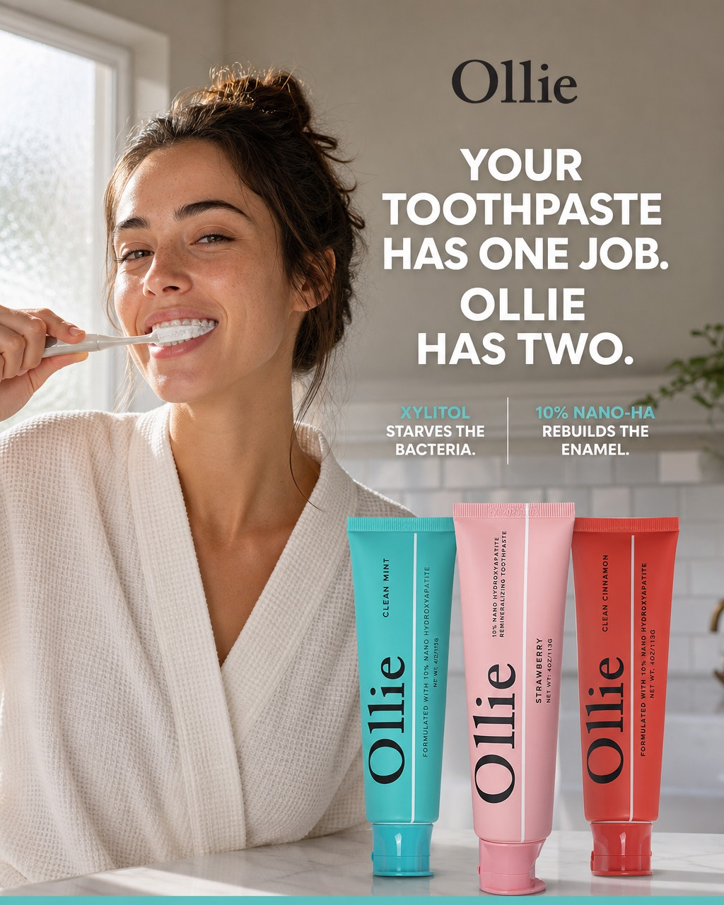
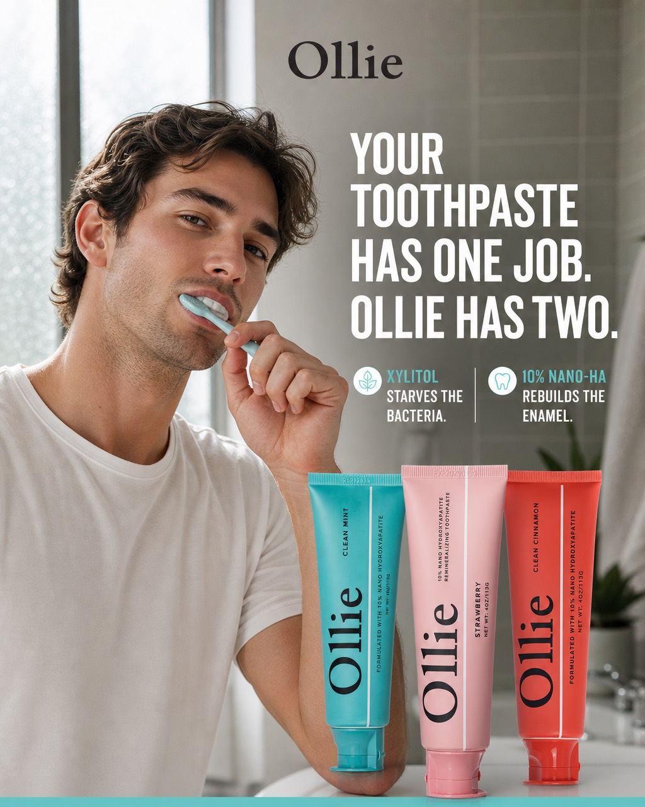
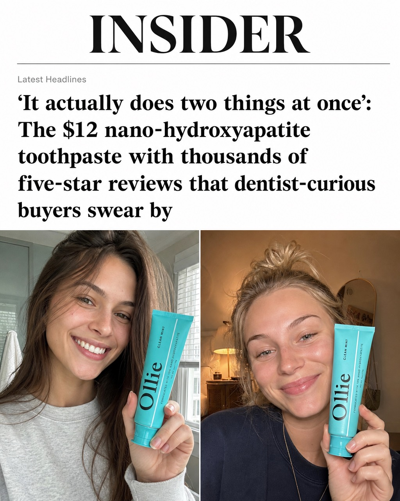
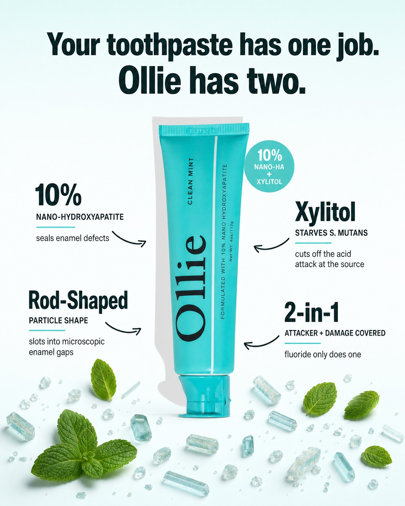
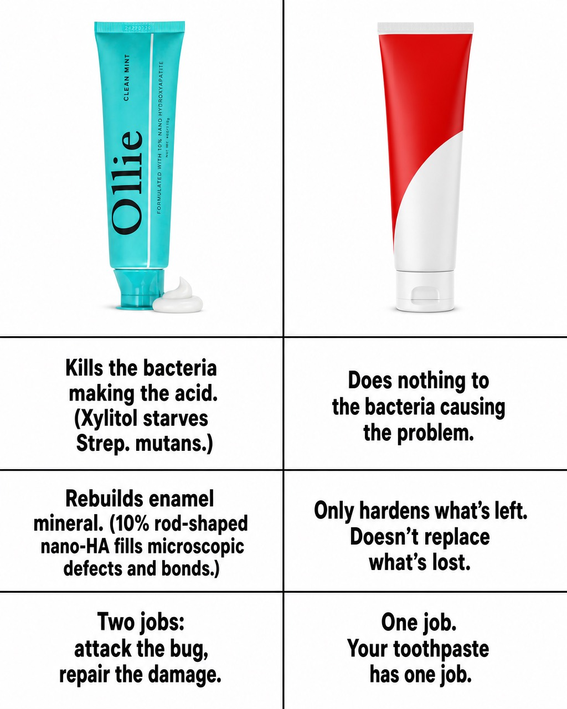
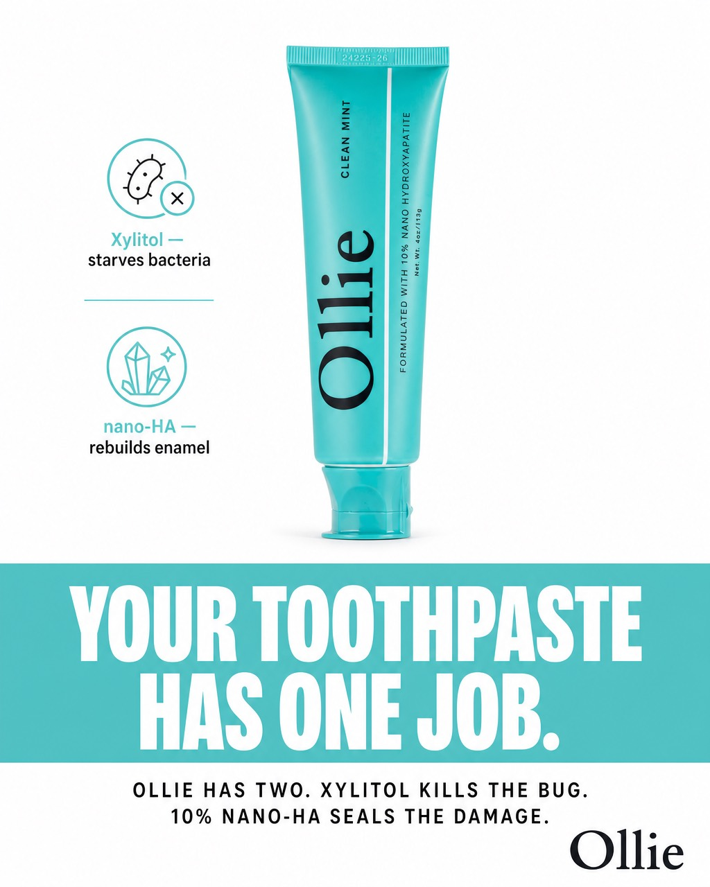
Carousel
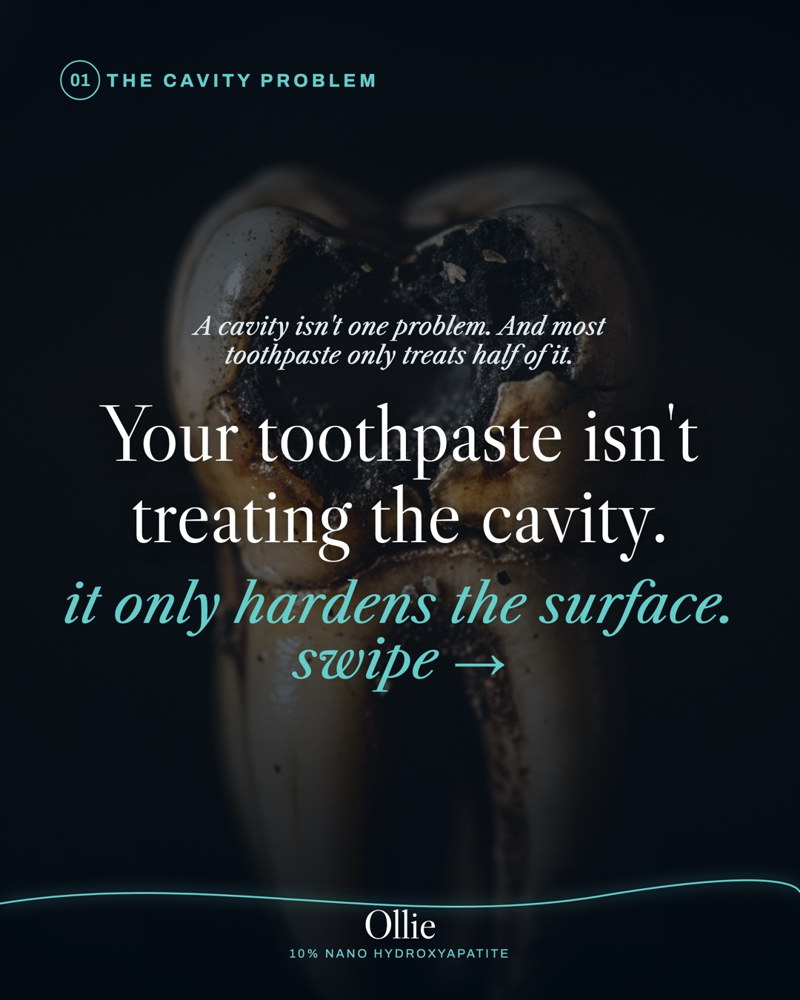
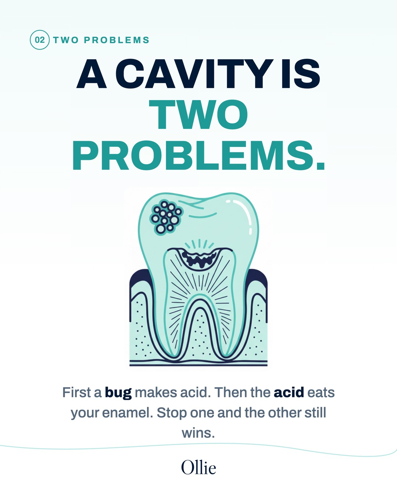
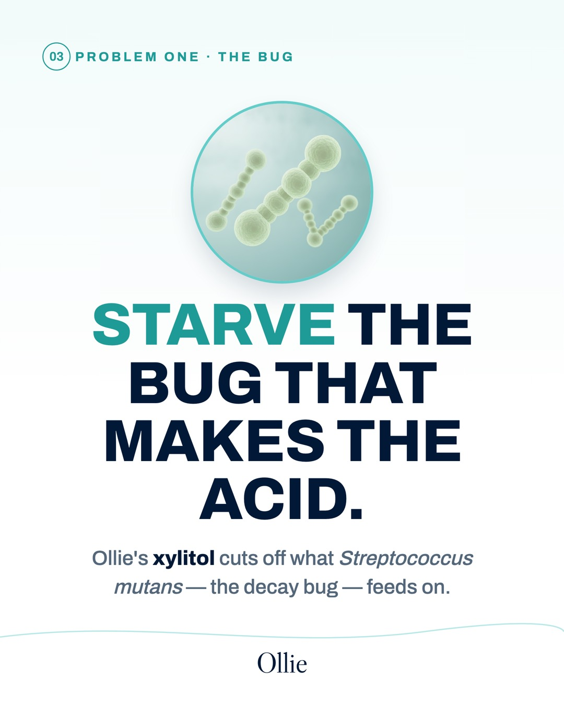
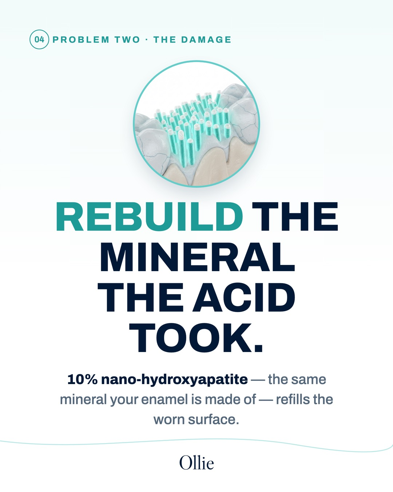
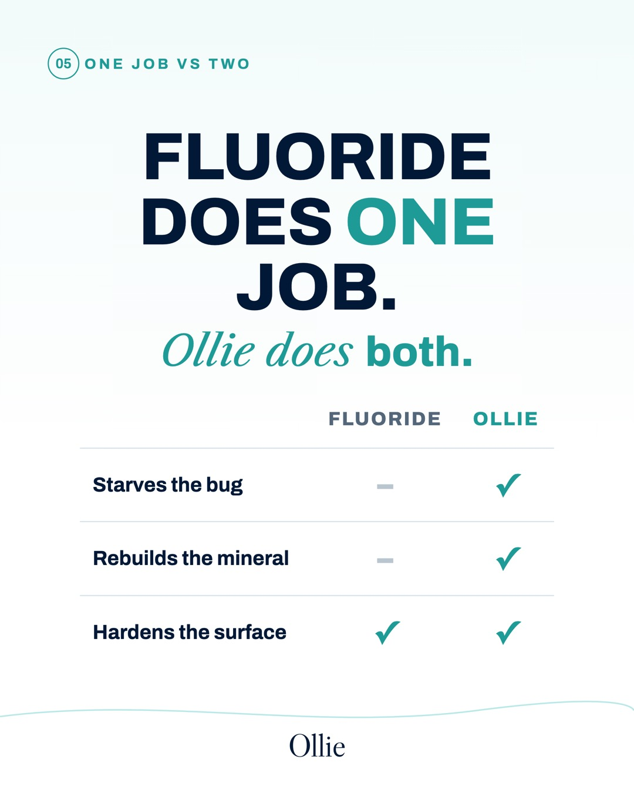
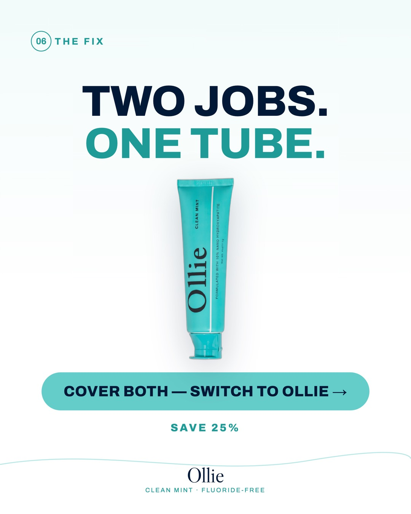
Swipe → the six frames read left-to-right as one connected sequence.
Facebook copy
Headlines & description